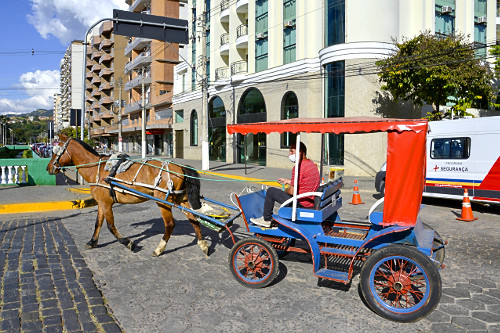

Transporte interno
Moto-táxi ou carroça(charrete) do trapiche até a Praia do Vai-Quem-Quer
R$ 7,00-R$ 15,00

Moto-táxi ou carroça(charrete) do trapiche até a Praia do Vai-Quem-Quer
R$ 7,00-R$ 15,00

Refeições completas
R$ 30,00-R$ 60,00

Simples/Chalés
Simples: aprox. R$60,00-R$ 130,00, Chalés: aprox. R$150,00-R$ 300,00
A Ilha de Cotijuba é um destino paradisíaco e de preservação ambiental em Belém, Pará, acessível via barco pelo Distrito de Icoaraci. A ilha, que é Área de Proteção Ambiental, destaca-se pelas praias de água doce (como Vai-Quem-Quer e Farol), proibição de veículos motorizados (exceto os autorizados), charretes, bondinhos e cultura local forte.